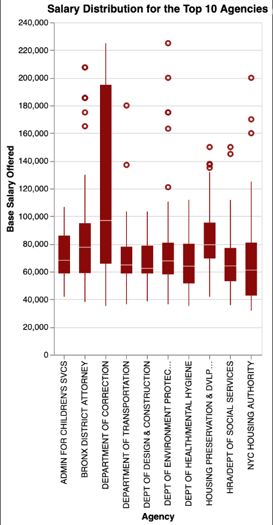

Abigail Swanson, Emma Penn, Chelsa Batara, Grace Koo
Final project for Fall 2024 DS4200: Information Visualization and Presentation, taught by Professor Xiaoyi Yang, Northeastern University.
The topic we are focusing on for our project highlights the job opportunities in the New York City public sector. This particular dataset is important to this project because it provides some interesting insight into attributes such as salaries, positions available, and timelines of job availability to name a few. We will be able to analyze, interpret, and draw conclusions based on the data. Examples of trends we might be able to make inferences about are the types of jobs that are most in demand, their accessibility, and what types of skills are needed for these postings. As a whole, this project will encapsulate the job market that New York City provides through a very specific lens.
TASKS AND TOPICS HERE!
The dataset contains information on job postings from the city of New York’s government job site. Each observation contains information on the timeframe of when the job was posted, the salary range, a category for the type of job that is created, the number of positions available, and the location of the job. The information is collected to help keep track of job postings to help inform New York city residents what kind of work opportunities are around New York. The data includes jobs open to city employees only as well as public postings. The original dataset has 5,375 rows which we plan to use all of.
The dataset we are using initially contained 29 attributes. We removed the attributes whose values dealt with dates and addresses. We also removed lengthy descriptive attributes like Job Description and Preferred Skills for simplicity. We are left with 15 attributes, eleven categorical and four quantitative.
Some analysis questions include the following: how does the salary of the job change based on the number of postings as well as how this may change based on a specific job category or career level? How does the distribution of the number of postings change based on the agency that posted them? How does the number of job postings vary based on the unit of work, and is a unit of work more popular at this time? Which work units are hiring less currently?
To address these analysis questions, we are going to use a mix of both static and interactive plots. A potential interactive visualization we plan to include is a comparison of the salary frequency vs. the number of postings, and grouping them based on job type in which the user can increase the focus on the graph based on the job type they want to specifically look at. Another idea for an interactive plot is changing the color palette based on different categorical variables that the user may want to group the points by, such as career level or job type. A potential static visualization includes plots such as a boxplot to look at the distribution of the number of postings based on the agency that posted them. Another static visualization we can include is a bar chart to look at the number of jobs per the work unit.
TALK MORE ABOUT THE ATTRIBUTES AND HOW WE FILTERED THE DATA, MORE ABOUT THE SOURCE!
For the first static plot, the main audience for the graph is students and college-aged people in terms of getting
a better understanding of when exactly jobs might be posted in the NYC area.
The second plot, we felt it was important to highlight
how the salary ranges have changed over time. We also wanted to be able to identify any trends if applicable and any changes that may occur
in conjunction with the job market at that time.
The third plot takes a look at base salary per the top ten agencies with open
job postings, and determining any trends with outliers.
The purpose of these static plots were to take a deeper dive into
base salaries, seeing any correlation between salaries increases, and audience specific data.
This is a paragraph to explain the takeaways of the interactive visualizations.
This is a paragraph to explain a summary or concluding statments about our data visualizations, what could be done in the future, and what we learned from the data visualizations.